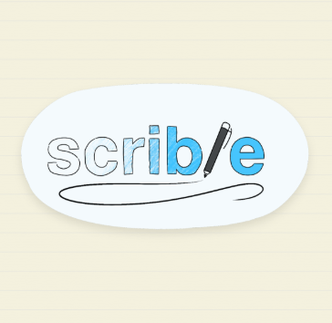
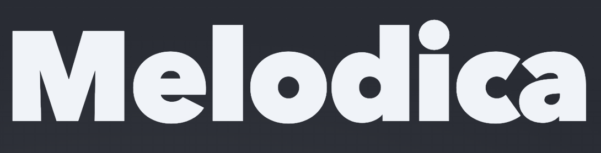
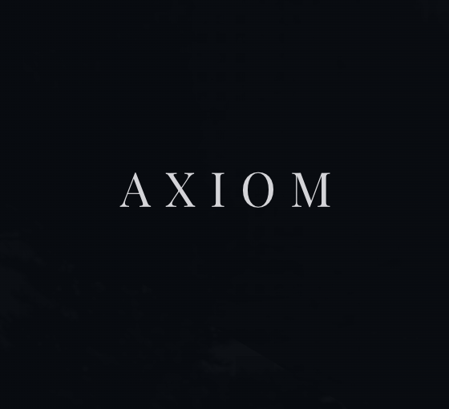

Scrible ↗
Handwriting recognition for people with hand tremors.
Next.js · Python · TensorFlowI make things with software, AI, and robots. A few projects and experiences, collected here.

Handwriting recognition for people with hand tremors.
Next.js · Python · TensorFlow
A browser-based music maker with an interactive piano roll.
Next.js · Tone.js · Supabase
School data, geographic visualization, and grade normalization.
TypeScript · React · AIAI software engineering · workflow automation and LLM integration.
Robotics software research · control software and simulation for a KINOVA Link6 arm.
Executive director · innovation challenge and event operations.